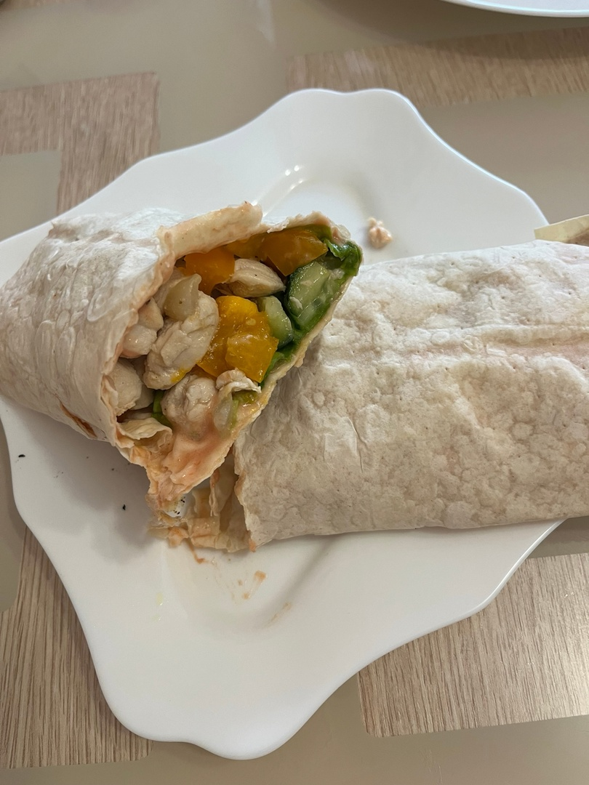

ШАУРМА
Шаурма́ или шаве́рма — ближневосточное блюдо из мяса (курица, ягнятина, баранина, реже — свинина), обжаренного на вертеле, завёрнутого в лаваш или питу, с добавлением капусты, свежего огурца, репчатого лука, чесночного соуса и, по желанию, специй. Употребляется без использования столовых приборов.
КБЖУ на 1 порцию - 370/40/8/39Время приготовления - 15 минут
Сложность - легко
ИНГРИДИЕНТЫ НА 1 ПОРЦИЮ:
- Куриное филе - 150гр
- Лаваш прямоугольный армянский - 1шт
- Помидор - 1шт
- Огурец - 50гр
- Листья салата - 40гр
- Сметана - 20гр
- Томатная паста - 25гр
СПОСОБ ПРИГОТОВЛЕНИЯ:
Шаг 1:
Отвариваем или обжариваем куриное филе.
Шаг 2:
Нарезаем овощи.
Шаг 3:
Смешиваем сметану и томатную пасту, смазываем получившимся соусом лаваш.
Шаг 4:
Далее выкладываем с одной стороны овощи, сверху мясо, оставляя отступы, чтобы лаваш можно было спокойно завернуть. Сворачиваем лаваш снаала снизу, потом по бокам. Следите, чтобы ингридиенты "не убежали".
Шаг 5:
Обжариваем лаваш на сухой сковороде с двух сторон.
ПРИЯТНОГО АППЕТИТА!